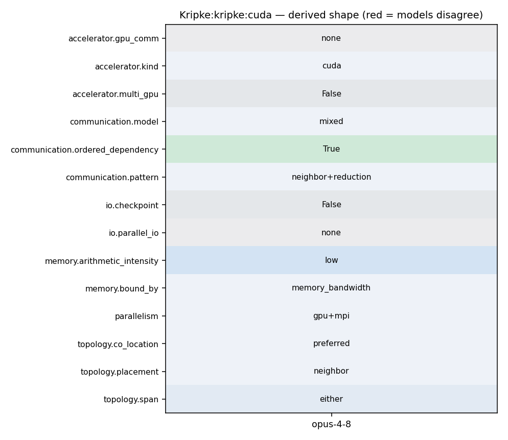

srun kripke --arch CUDA --procs npx,npy,npz
41 int num_elem = field.size(sdom_id); 42 43 #if defined(KRIPKE_USE_CUDA) || defined(KRIPKE_USE_HIP) 44 #if defined(KRIPKE_USE_CUDA) 45 RAJA::forall<RAJA::cuda_exec<256>>( 46 #elif defined(KRIPKE_USE_HIP) 47 RAJA::forall<RAJA::hip_exec<256>>( 48 #else
80 } 81 82 // async execution needs synchronization 83 #if defined(KRIPKE_USE_CUDA) 84 RAJA::synchronize<RAJA::cuda_synchronize>(); 85 #elif defined(KRIPKE_USE_HIP) 86 RAJA::synchronize<RAJA::hip_synchronize>(); 87 #endif
41 int num_elem = field.size(sdom_id); 42 43 #if defined(KRIPKE_USE_CUDA) || defined(KRIPKE_USE_HIP) 44 #if defined(KRIPKE_USE_CUDA) 45 RAJA::forall<RAJA::cuda_exec<256>>( 46 #elif defined(KRIPKE_USE_HIP) 47 RAJA::forall<RAJA::hip_exec<256>>( 48 #else
171 GlobalSdomId global_sdom_id = local_to_global(sdom_id); 172 173 // Post the recieve 174 MPI_Irecv(plane_data_ptr, plane_data_size, MPI_DOUBLE, upwind_rank, 175 *global_sdom_id, MPI_COMM_WORLD, &recv_requests[recv_requests.size()-1]); 176 177 // increment number of dependencies 178 num_depends ++; 179 #else 180 // No MPI, so this doesn't make sense 181 KRIPKE_ASSERT("All comms should be on-node without MPI"); 182 #endif 183 } 184 185 // add subdomain to queue 186 queue_sdom_ids.push_back(*sdom_id); 187 queue_depends.push_back(num_depends); 188 } 189 190 void ParallelComm::postSends(Kripke::Core::DataStore &data_store, Kripke::SdomId sdom_id, 191 Kripke::Core::FieldStorage<double> *src_plane_data[3]) 192 { 193 // post sends for downwind dependencies 194 Kripke::Core::Comm comm;
54 sdom_ready = comm->readySubdomains(); 55 56 // Run the ready list 57 for (auto ii = 0; ii < sdom_ready.size(); ++ii) { 58 59 SdomId sdom_id = sdom_ready[ii]; 60 61 auto upwind = field_upwind.getView(sdom_id); 62 63 // Clear boundary conditions 64 if(upwind(Dimension{0}) == -1){ 65 Kripke::Kernel::kConst(data_store.getVariable<Field_IPlane>("i_plane"), sdom_id, 0.0); 66 } 67 if(upwind(Dimension{1}) == -1){ 68 Kripke::Kernel::kConst(data_store.getVariable<Field_JPlane>("j_plane"), sdom_id, 0.0); 69 } 70 if(upwind(Dimension{2}) == -1){ 71 Kripke::Kernel::kConst(data_store.getVariable<Field_KPlane>("k_plane"), sdom_id, 0.0); 72 } 73 74 // Perform subdomain sweep 75 Kripke::Kernel::sweepSubdomain(data_store, Kripke::SdomId{sdom_id}); 76 77 // Mark as complete (and do any communication)
118 Determines if upwind dependencies require communication, and posts appropriate Irecv's. 119 Receives use either direct GPU plane buffers or direct host plane buffers. 120 */ 121 void ParallelComm::postRecvs(Kripke::Core::DataStore &data_store, SdomId sdom_id){ 122 using namespace Kripke::Core; 123 Comm comm; 124 int mpi_rank = comm.rank(); 125 126 auto upwind = data_store.getVariable<Field_Adjacency>("upwind").getView(sdom_id); 127 128 auto global_to_rank = data_store.getVariable<Field_GlobalSdomId2Rank>("GlobalSdomId2Rank").getView(SdomId{0}); 129 130 #ifdef KRIPKE_USE_MPI 131 auto local_to_global = data_store.getVariable<Field_SdomId2GlobalSdomId>("SdomId2GlobalSdomId").getView(SdomId{0}); 132 #endif 133 134 // go thru each dimensions upwind neighbors, and add the dependencies 135 int num_depends = 0; 136 for(Dimension dim{0};dim < 3;++ dim){ 137 138 // If it's a boundary condition, skip it 139 if(upwind(dim) < 0){ 140 continue; 141 }
49 auto &field_upwind = data_store.getVariable<Field_Adjacency>("upwind"); 50 51 /* Loop until we have finished all of our work */ 52 while(comm->workRemaining()) { 53 std::vector<SdomId> sdom_ready; 54 sdom_ready = comm->readySubdomains(); 55 56 // Run the ready list 57 for (auto ii = 0; ii < sdom_ready.size(); ++ii) { 58 59 SdomId sdom_id = sdom_ready[ii]; 60 61 auto upwind = field_upwind.getView(sdom_id); 62 63 // Clear boundary conditions 64 if(upwind(Dimension{0}) == -1){ 65 Kripke::Kernel::kConst(data_store.getVariable<Field_IPlane>("i_plane"), sdom_id, 0.0); 66 } 67 if(upwind(Dimension{1}) == -1){ 68 Kripke::Kernel::kConst(data_store.getVariable<Field_JPlane>("j_plane"), sdom_id, 0.0); 69 } 70 if(upwind(Dimension{2}) == -1){ 71 Kripke::Kernel::kConst(data_store.getVariable<Field_KPlane>("k_plane"), sdom_id, 0.0); 72 }
121 RAJA_INLINE 122 long allReduceSumLong(long value) const { 123 #ifdef KRIPKE_USE_MPI 124 MPI_Allreduce(MPI_IN_PLACE, &value, 1, MPI_LONG, MPI_SUM, m_comm); 125 #endif 126 return value; 127 }
59 RAJA::TypedRangeSegment<Zone>(0, num_zones) ), 60 KRIPKE_LAMBDA (Moment nm, Direction d, Group g, Zone z) { 61 62 phi(nm,g,z) += ell(nm, d) * psi(d, g, z); 63 64 } 65 );
59 RAJA::TypedRangeSegment<Zone>(0, num_zones) ), 60 KRIPKE_LAMBDA (Moment nm, Direction d, Group g, Zone z) { 61 62 phi(nm,g,z) += ell(nm, d) * psi(d, g, z); 63 64 } 65 );
19 20 Analysis 21 -------- 22 A major challenge of achieving high-performance in an Sn transport (or any physics) code is choosing a data-layout and a parallel decomposition that lends itself to the targeted architecture. Often the data-layout determines the most efficient nesting of loops in computational kernels, which then determines how well your inner-most-loop SIMD vectorizes, how you add threading (pthreads, OpenMP, etc.), and the efficiency and design of your parallel algorithms. Therefore, each nesting produces a different loop nesting orders with substantially different performance characteristics. We want to explore how easily and efficiently these different nestings map to different architectures. In particular, we are interested in exploring how we can achieve good parallel efficiency while also achieving efficient use of node resources (such as SIMD units, memory systems, and accelerators). 23 24 Parallel sweep algorithms can be explored with Kripke in multiple ways. The core MPI algorithm could be modified or rewritten to explore other approaches, domain overloading, or alternate programming models (such as Charm++). The effect of load-imbalance is an understudied aspect of Sn transport sweeps, and could easily be studied with Kripke by artificially adding more work (i.e. unknowns) to a subset of MPI tasks. Block-AMR could be added to Kripke, which would be a useful way to explore the cost-benefit analysis of adding AMR to an Sn code, and would be a way to further study load imbalances and AMR effects on sweeps. 25
213 # Configure CUDA 214 # 215 216 if(ENABLE_CUDA) 217 218 set(KRIPKE_USE_CUDA 1) 219 220 list(APPEND KRIPKE_DEPENDS blt::cuda) 221 222 set(KRIPKE_ARCH "CUDA") 223 224 # Make sure that nvcc turns on the host compiler OpenMP flag 225 if(ENABLE_OPENMP)
41 int num_elem = field.size(sdom_id); 42 43 #if defined(KRIPKE_USE_CUDA) || defined(KRIPKE_USE_HIP) 44 #if defined(KRIPKE_USE_CUDA) 45 RAJA::forall<RAJA::cuda_exec<256>>( 46 #elif defined(KRIPKE_USE_HIP) 47 RAJA::forall<RAJA::hip_exec<256>>( 48 #else
113 using RAJA::omp_reduce; 114 #endif 115 116 #ifdef KRIPKE_USE_CUDA 117 using RAJA::cuda_exec; 118 using RAJA::cuda_block_x_loop; 119 using RAJA::cuda_block_y_loop; 120 using RAJA::cuda_block_z_loop; 121 using cuda_threadblock_x_direct = RAJA::cuda_global_size_x_direct<32>; // blocks of 32 threads
171 GlobalSdomId global_sdom_id = local_to_global(sdom_id); 172 173 // Post the recieve 174 MPI_Irecv(plane_data_ptr, plane_data_size, MPI_DOUBLE, upwind_rank, 175 *global_sdom_id, MPI_COMM_WORLD, &recv_requests[recv_requests.size()-1]); 176 177 // increment number of dependencies 178 num_depends ++; 179 #else 180 // No MPI, so this doesn't make sense 181 KRIPKE_ASSERT("All comms should be on-node without MPI"); 182 #endif 183 } 184 185 // add subdomain to queue 186 queue_sdom_ids.push_back(*sdom_id); 187 queue_depends.push_back(num_depends); 188 } 189 190 void ParallelComm::postSends(Kripke::Core::DataStore &data_store, Kripke::SdomId sdom_id, 191 Kripke::Core::FieldStorage<double> *src_plane_data[3]) 192 { 193 // post sends for downwind dependencies 194 Kripke::Core::Comm comm;
118 Determines if upwind dependencies require communication, and posts appropriate Irecv's. 119 Receives use either direct GPU plane buffers or direct host plane buffers. 120 */ 121 void ParallelComm::postRecvs(Kripke::Core::DataStore &data_store, SdomId sdom_id){ 122 using namespace Kripke::Core; 123 Comm comm; 124 int mpi_rank = comm.rank(); 125 126 auto upwind = data_store.getVariable<Field_Adjacency>("upwind").getView(sdom_id); 127 128 auto global_to_rank = data_store.getVariable<Field_GlobalSdomId2Rank>("GlobalSdomId2Rank").getView(SdomId{0}); 129 130 #ifdef KRIPKE_USE_MPI 131 auto local_to_global = data_store.getVariable<Field_SdomId2GlobalSdomId>("SdomId2GlobalSdomId").getView(SdomId{0}); 132 #endif 133 134 // go thru each dimensions upwind neighbors, and add the dependencies 135 int num_depends = 0; 136 for(Dimension dim{0};dim < 3;++ dim){ 137 138 // If it's a boundary condition, skip it 139 if(upwind(dim) < 0){ 140 continue; 141 }
239 240 * **``--procs <npx,npy,npz>``** 241 242 Number of MPI ranks in each spatial dimension. (Default: --procs 1,1,1) 243 244 * **``--dset <ds>``** 245